FLAGELO DE SANGUE
SANGUE • 2°CÍRCULO
O ritual marca o alvo com uma cicatriz sobrenatural e impõe uma ordem. Caso a ordem seja desobedecida, a marca provoca uma dor intensa e causa dano de Sangue. A marca desaparece caso o alvo consiga resistir à sua influência por tempo suficiente.
INEXISTIR
CONHECIMENTO • 4°CÍRCULO
Um ritual de Conhecimento capaz de apagar completamente um ser da existência. O alvo tem seu corpo e sua mente desmantelados enquanto sua própria história é destruída, podendo desaparecer sem deixar qualquer vestígio.


DEFLAGRAÇÃO DE ENERGIA
ENERGIA • 4°CÍRCULO
O conjurador acumula uma enorme quantidade de Energia e a libera em uma explosão devastadora. A manifestação causa grande destruição na área e ainda interfere no funcionamento de equipamentos tecnológicos.
BARGANHA INSANA
MORTE • 3S°CÍRCULO
O conjurador entrega parte de sua própria percepção temporal à entidade da Morte em troca de uma restauração completa. Apesar de recuperar sua saúde e eliminar condições negativas, o ritual cobra um preço permanente de sua Sanidade e deixa marcas físicas no corpo.
